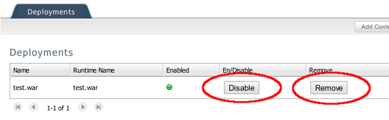

Deployment Scanners
Deployment Scanner cleanup
When starting a JBoss server, the server adapter automatically adds deployment scanners to your server to pick up deployments to locations outside the server. Depending on your server version, these scanners may be persisted across future restarts, or may not be. On servers where they are persisted, we also typically remove these scanners, to prevent multiple workspaces using the same server from having collisions or conflicting deployment locations.
Some users prefer to manage their deployment scanners on their own, and wish the server adapter did not automatically take control of this aspect of their development environment. For these users, two new settings have been added to the server editor which will allow control for this behavior.

Starting and Stopping Deployed Modules
Module start, stop and restart
Start, stop and restart on modules in the server adapter now perform an actual start, stop and restart of the module on AS7 and above.
These operations are implemented with JBoss Management API instad of file copying/moving operations and have the following consequences:
- The operations are now much faster
- Restart no longer does a full redeploy/publish. Use "Full publish" for this.
- Status of the module in server view and administration console should now be in sync
